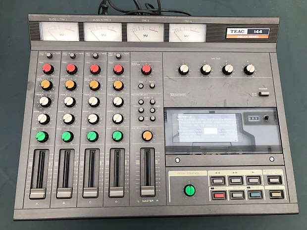

Today, it isnt rare to find even children recording their own music in their bedrooms, but recording music wasn't always one smartphone away from possible.
Various advances in both analog and digital technology have made way toward the democratization of audio production via increased accesibility.

| Signifacance | Tool | Year |
|---|---|---|
| This small 4-track tape recorder was the first to use standard cassete tape. | Tascam TEAC 144 | 1979 |
| MIDI-based instruments, sequencers and supporting computers would minimize the amount of musical hardware and musicians needed in a studio. | MIDI | 1982 |
| This early DAW featured non-destructive editing which meant less physical tape cutting and splicing in the studio. It's creators would later develop Pro Tools in 1991. | Sound Tools | 1989 |
| The WWW would allow for people to upload and access information much more effieciently over the internet thus becoming a new platform for musicians to distribute on. | World Wide Web | 1989 |
| The introduction of Apple's Garageband onto their mobile devices would go on to arm a new generation of producers with a simple but effective studio that fits in their pocket. | Garageband for iOS | 2011 |